Capítulo 5 Modelado estadístico
Llegamos a un tema de gran interés para quienes realizan investigaciones formales. La posición central que tiene el modelado en la investigación científica se debe a que cuantifica relaciones: permite pasar de decir “La luz solar abundante mejora el crecimiento de las plantas” a “por cada hora adicional de exposición mensual a la luz solar, los cultivos aumentaron su rinde en un 1%”. La cuantificación permite realizar comparaciones, algo clave para entender un fenómeno estudiado: antes y después, con o sin tratamiento, en un lugar o en otro.
Este capítulo le debe mucho a ModernDive: An Introduction to Statistical and Data Sciences via R por Chester Ismay y Albert Y. Kim, disponible en forma gratuita en http://moderndive.com/. ModernDive es un recurso muy recomendable para quienes quieran continuar profundizando su conocimiento más allá de los temas que veremos a continuación.
En términos matemáticos, se habla de “modelar” debido a que estamos creando un modelo, una reconstrucción simplificada (¡simplificada en extremo!) de cómo funciona un proceso observado en el mundo real. En un modelo de datos, siempre tenemos al menos
- Una variable resultante, siempre una sola, también llamada variable “dependiente”,
- Una o más variables predictoras, también llamadas “explicativas”
El modelado de datos puede ser utilizado para dos propósitos:
Predecir el valor de una variable resultante en base a valores conocidos de las variables predictoras. Aquí no interesa tanto entender cómo es que las variables interactúan entre sí, o por qué lo hacen. Mientras las predicciones sean acertadas, o se acerquen lo suficiente, el modelo cumple su cometido. Los modelos predictivos se emplean en una enorme variedad de aplicaciones: inversión en bolsa, prevención de fraude, publicidad online, fijación de primas en seguros de riesgo, etc.
Explicar la relación entre una variable dependiente y todas las demás (las explicativas), buscando determinar si la relación es significativa. Los modelos explicativos son los que se favorecen en investigación académica, ya que ayudan a entender el fenómeno modelado.
Existen muchísimas técnicas para modelar datos, algunas de ellas simples como la regresión lineal, y otras mucho más complejas, como las redes neuronales. Por supuesto, vamos a practicar con las primeras.
La humilde regresión lineal, fácil de explicar y muy fácil de resolver con la ayuda de una computadora, es el caballito de batalla del modelado estadístico. A pesar de que no es adecuada para ciertos tipo de datos, y de que existen métodos más modernos que explotan con intensidad el potencial de las computadoras, la regresión lineal sigue siendo la herramienta más común. Un poco por costumbre, y otro porque es el método más fácil de interpretar, lo que favorece entender y comunicar sus resultados.
5.1 Regresión lineal simple
La encarnación más sencilla de la regresión lineal es la simple o univariada. Tenemos nuestra variable \(y\), numérica, y una sola variable predictora \(x\), que puede ser numérica o categórica.
Para poner en práctica los conceptos repasados en este capítulo, vamos a tomarnos un recreo de los datos de Buenos Aires, haciendo un zoom out hacia las escalas de país, continente y el planeta entero. Contamos con un dataset muy prolijo e interesante recopilado por Gapminder (www.gapminder.org), una organización que busca “hacer comprensible al mundo en base a estadísticas confiables”.
Descarguemos el dataset y echémosle un vistazo como ya sabemos hacer:
data_mundial <- read.csv("https://bitsandbricks.github.io/data/gapminder.csv")
summary(data_mundial)## pais continente año expVida
## Afghanistan: 12 Africa :624 Min. :1952 Min. :23.60
## Albania : 12 Americas:300 1st Qu.:1966 1st Qu.:48.20
## Algeria : 12 Asia :396 Median :1980 Median :60.71
## Angola : 12 Europe :360 Mean :1980 Mean :59.47
## Argentina : 12 Oceania : 24 3rd Qu.:1993 3rd Qu.:70.85
## Australia : 12 Max. :2007 Max. :82.60
## (Other) :1632
## pobl PBI_PC
## Min. : 60011 Min. : 241.2
## 1st Qu.: 2793664 1st Qu.: 1202.1
## Median : 7023596 Median : 3531.8
## Mean : 29601212 Mean : 7215.3
## 3rd Qu.: 19585222 3rd Qu.: 9325.5
## Max. :1318683096 Max. :113523.1
## Con el poder de summary(), podemos decir unas cuantas cosas acerca de nuestros dataset. Las observaciones son de un país, su continente, un año determinado y su expectativa de vida, población y… ¿PBI_PC?. Esa última es PBI per cápita. Que, según parece, hay 12 observaciones por país. Que el rango de años es de 1952 a 2007. Que a lo largo de esos años, la menor expectativa registrada ha sido de 23 años (¡uf!) y la mayor de 82. Que el país menos poblado en el dataset ha tenido apenas más de 60.000 habitantes, mientras que el más populoso ha alcanzado los 1300 millones.
5.1.1 Regresión con una variable numérica
Hagamos nuestra pregunta: ¿Cómo ha se relaciona el paso del tiempo (variable explicativa) con la expectativa de vida en la Argentina?
Para contestar, primero filtremos los datos que nos interesan:
data_arg <- data_mundial %>%
filter(pais == "Argentina")
data_arg## pais continente año expVida pobl PBI_PC
## 1 Argentina Americas 1952 62.485 17876956 5911.315
## 2 Argentina Americas 1957 64.399 19610538 6856.856
## 3 Argentina Americas 1962 65.142 21283783 7133.166
## 4 Argentina Americas 1967 65.634 22934225 8052.953
## 5 Argentina Americas 1972 67.065 24779799 9443.039
## 6 Argentina Americas 1977 68.481 26983828 10079.027
## 7 Argentina Americas 1982 69.942 29341374 8997.897
## 8 Argentina Americas 1987 70.774 31620918 9139.671
## 9 Argentina Americas 1992 71.868 33958947 9308.419
## 10 Argentina Americas 1997 73.275 36203463 10967.282
## 11 Argentina Americas 2002 74.340 38331121 8797.641
## 12 Argentina Americas 2007 75.320 40301927 12779.380Como dijimos en el capítulo de visualización, los scatterplots son útiles para mostrar la relación entre dos variables. Usemos uno para visualizar la relación entre año y expectativa de vida en Argentina, para intentar anticipar los resultados de la regresión lineal.
ggplot(data = data_arg) +
geom_point(aes(x = año, y = expVida)) +
labs(title = "Correlación entre tiempo y expectativa de vida",
subtitle = "Argentina",
y = "expectativa de vida")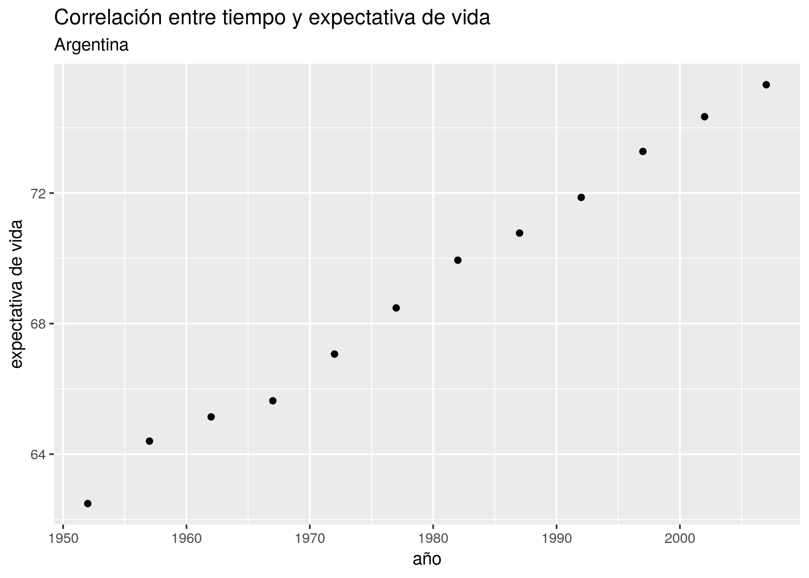
Bien, no necesitamos recurrir a la matemática para saber que tiempo y expectativa de vida están correlacionadas en forma positiva. Esto es, el incremento de una unidad de tiempo en general (o siempre, en este caso) resulta en el incremento de la expectativa de vida. Una correlación negativa sería lo opuesto: que el incremento de la variable explicativa estuviera asociado a un decremento de la variable explicada. Además del signo de una correlación, otra medida importante es su intensidad. La intensidad de una correlación va de -1 (correlación negativa total) a 1 (correlación positiva total). Una correlación de cero significa que las dos variables son por completo independientes. En en ese caso, saber cuánto vale una no nos ayuda a estimar el valor de la otra.
Obtener la correlación entre dos variables es fácil. La función cor() toma dos vectores dos secuencias de valores, y los compara para determinar su grado de correlación. Recurriendo al truco que ya usamos alguna vez, usamos el formato “dataframe$columna” para extraer las columnas de nuestro dataframe que necesitamos:
cor(data_arg$año, data_arg$expVida)## [1] 0.9977816¿A partir de qué valor consideramos que existe una correlación apreciable? La verdad es que no hay una regla a seguir, pero inventemos una. Si el valor absoluto de la correlación es..
- de 0,7 a 1: de fuerte a total
- de 0,5 a 0,7: de moderada a fuerte
- de 0,3 a 0,7: de débil a moderada
- menor a 0,3: de nula a débilEl valor que obtuvimos se acerca mucho a 1, la correlación casi total. OK, el paso de los años y la expectativa de vida en la Argentina están correlacionados de forma intensa, pero aún desconocemos algo quizás más importante: un valor preciso del “efecto” que el paso de cada año tiene sobre la expectativa de vida. Eso es lo que vamos a determinar con la regresión lineal. Usamos la palabra “efecto” entre comillas para aclarar una de las limitaciones del modelado estadístico: podemos probar correlación, pero no causalidad. Es decir, no podemos probar que una variable causa a la otra; en todo caso, probamos que se mueven juntas y en base a ello podríamos diseñar un experimento que permita comprobar causalidad.
Vamos a la regresión lineal entonces, para medir de una buena vez la correlación entre tiempo y expectativa de vida. Usamos la función lm() (por “linear model”), así:
modelo_exp <- lm(expVida ~ año, data = data_arg)¡Eso es todo! Hemos construido un modelo estadístico; ahora tenemos que aprender a usarlo. Obsérvese que volvió aparecer el simbolillo que denota una fórmula, ~. Usado como primer argumento de lm(), significa “expVida vs año”, es decir “estimar el efecto en la variable expVida cuando incrementa el valor de año”, usando los datos contenidos en el dataframe data_arg.
El resultado de lm(), que hemos guardado dentro de la variable modelo_exp es un tipo de objecto con el que no hemos trabajado hasta ahora. No es un dataframe, sino una lista que contiene distintos atributos del modelo estadístico. No hace falta preocuparnos por eso ahora.
Retomando nuestra pregunta… ¿cuál es el efecto? Nos lo dice el modelo cuando lo escribimos.
modelo_exp##
## Call:
## lm(formula = expVida ~ año, data = data_arg)
##
## Coefficients:
## (Intercept) año
## -389.6063 0.2317Ahí está. En nuestro modelo, el coeficiente de la variable “año” es 0.2317. Significado: incrementando en una unidad la variable año, la variable expectativa de vida se incrementa en 0.2317. Dicho de otra manera, por cada año que pasa la expectativa de vida en la Argentina aumenta casi 3 meses.
El otro coeficiente que aparece, “(Intercept)” es la intersección. En términos de interpretado del modelo, la intersección rara vez tiene utilidad. Para lo que sí sirve es para trazar la línea que permite “predecir” valores para años en los que no tenemos observaciones. Recordemos la fórmula que define una línea recta:
\[ y = a + b \times x \]
A cada punto en \(x\) le corresponde un valor en \(y\) que se obtiene multiplicando a \(x\) por la pendiente, \(b\), y sumando la intersección, \(a\). Se le llama “intersección” u “ordenada al origen” porque es el valor donde la recta intersecta con el eje de las y: cuando \(x\) vale \(0\), la fórmula nos da \(y = b\).
En una regresión lineal, el “modelo” que creamos es precisamente eso: una línea. Tan simple como eso. Lo que hace a esta linea tan potente, es que la podemos usar bola de cristal: para saber cuanto valdría la variable dependiente ante un valor determinado de la variable predictora, revisamos por donde pasa la línea.
Lo podemos visualizar con ayuda de ggplot(), que por supuesto incluye una función para trazar líneas. Parámetros necesarios: intercept (intersección) y slope (pendiente). Usamos los respectivos valores que nos indica el modelo, -389.6063 y o.2317.
ggplot(data = data_arg) +
geom_point(aes(x = año, y = expVida)) +
labs(title = "Correlación entre tiempo y expectativa de vida",
subtitle = "Argentina",
y = "expectativa de vida",
caption = "con línea de regresión") +
geom_abline(aes(intercept = -389.6063, slope = 0.2317), color = "blue")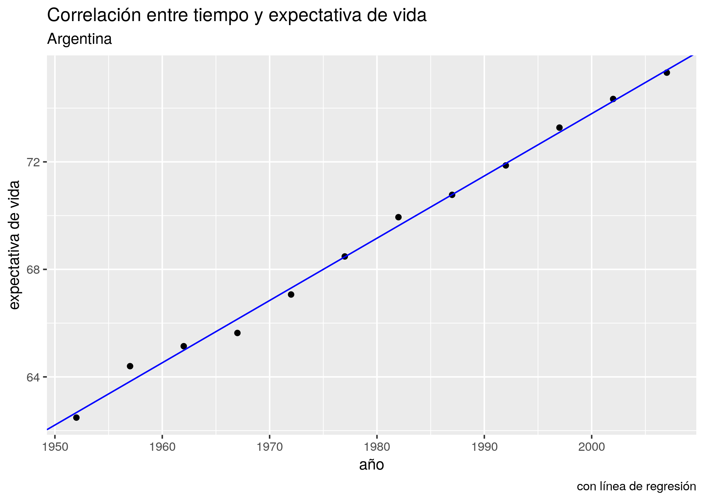
Aquí no vemos más que los datos que ya teníamos. Pero proyectemos la línea hacia el futuro. Con xlim() e ylim() podemos definir a mano los límites de nuestro gráfico, haciéndolo ir más allá del rango de los datos que tenemos. La línea sigue siendo la misma, sólo que ahora podemos ver hacia donde va.
ggplot(data = data_arg) +
geom_point(aes(x = año, y = expVida)) +
labs(title = "Correlación entre tiempo y expectativa de vida",
subtitle = "Argentina",
y = "expectativa de vida",
caption = "con línea de regresión") +
geom_abline(aes(intercept = -389.6063, slope = 0.2317), color = "blue") +
xlim(c(1950, 2030)) +
ylim(c(60, 85))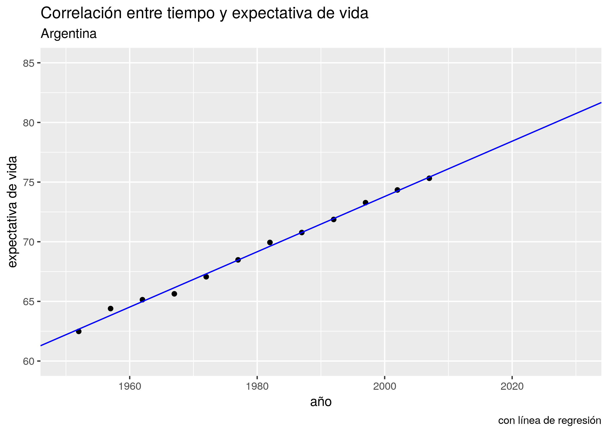
Ahí está la predicción. Según nuestro modelo, para el año 2030 la expectativa de vida en la Argentina habrá superado los 80 años.
Es hora de dar una definición oficial para una regresión lineal, y es esta: es la línea que describe la ecuación:
\[ \hat{y} = b_0 + b_1 \times x \] Obsérvese que se trata de la ecuación de una recta, \(y = a + b \times x\), con otros nombres. En voz alta, se leería así “Cada predicción del valor de y, llamada \(\hat{y}\), se obtiene multiplicando a la variable predictora \(x\) por su coeficiente \(b_1\) y sumándole el valor de la intersección \(b_0\)”. En otras palabras, a cada valor de \(x\) (las observaciones de la variable explicativa) le corresponde un punto en la recta trazada por el modelo. La altura sobre la recta de las \(y\) para ese punto es el valor predicho para la variable dependiente.
Ya que estamos, aprendamos otro truco. ggplot() puede agregar a nuestros scatterplots una capa con la línea de la regresión lineal, en forma automática. La función geom_smooth() se usar para explicitar patrones en los datos. Tal como otras de la familia ggplot, espera que se le diga que variables asignar a x e y, más un parámetro method con el método solicitado para trazar una línea de tendencia. Aquí usamos method = "lm" por linear model, el modelo lineal.
ggplot(data = data_arg) +
geom_point(aes(x = año, y = expVida)) +
labs(title = "Correlación entre tiempo y expectativa de vida",
subtitle = "Argentina",
y = "expectativa de vida",
caption = "con línea de regresión vía geom_smooth()") +
geom_smooth(aes(x = año, y = expVida), method = "lm")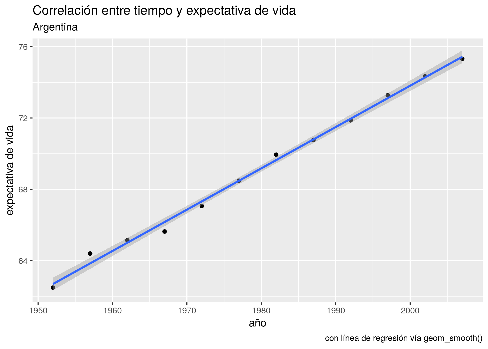
Hacer una regresión lineal se trata de encontrar la línea que atraviesa nuestra nube de puntos de modo tal que la suma de las distancias de cada punto a la línea sea la menor posible. Es un problema matemático que puede resolverse con distintas técnicas (algebra lineal, geometría, etc) que no vamos a discutir aquí. Confiaremos en R para hacer los cálculos.
En la relación año - expectativa de vida las distancias entre los puntos (las observaciones) y la línea (el modelo) son muy pequeñas. Eso indica que el modelo describe con gran precisión la dinámica de la relación entre las variables analizadas.
En general, es inusual encontrar una correlación tan nítida entre variables “en la vida real”, sobre todo cuando estudiamos procesos complejos cuyo comportamiento describe patrones más complejos que una relación lineal pura. No hace falta ir demasiado lejos para encontrar un ejemplo. Usando el mismo dataset, visualicemos un scatterplot de PBI vs año, agregando la línea de regresión para:
ggplot(data = data_arg) +
geom_point(aes(x = año, y = PBI_PC)) +
labs(title = "Correlación entre PBI y expectativa de vida",
subtitle = "Argentina",
y = "PBI per cápita") +
geom_smooth(aes(x = año, y = PBI_PC), method = "lm")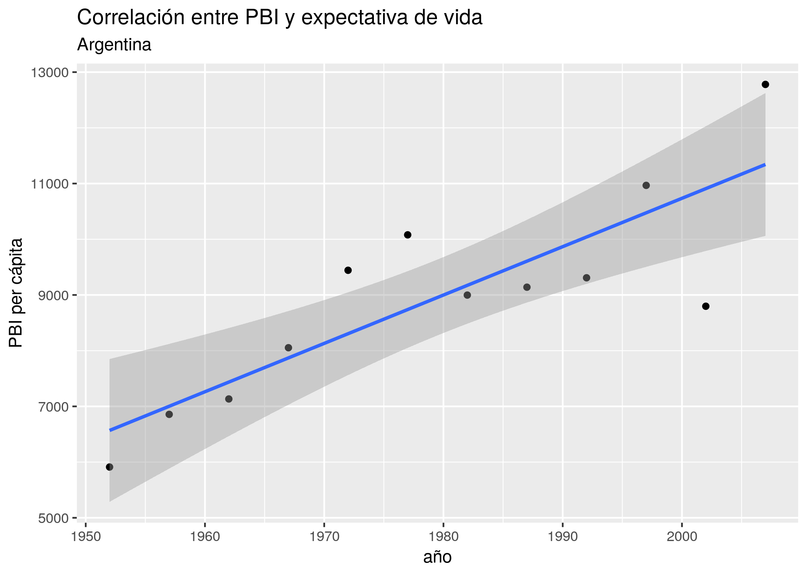
Sigue siendo evidente una fuerte tendencia lineal, pero las observaciones ya no se ciñen de forma tan estrecha a la línea idealizada de la regresión.
Obtengamos el modelo del PBI per cápita de la Argentina en relación al paso del tiempo:
modelo_PBI <- lm(PBI_PC ~ año, data = data_arg)
modelo_PBI##
## Call:
## lm(formula = PBI_PC ~ año, data = data_arg)
##
## Coefficients:
## (Intercept) año
## -162888.14 86.81Tal como indicaba el scatterplot, obtuvimos un coeficiente positivo. Según el modelo, cada año que pasa resulta en un incremento de 86 dólares en el PBI per cápita del país. Sin embargo, sabemos que no en todos los años se cumple al pie de la letra tal incremento. ¿Debería preocuparnos eso? Una parte importante del análisis basado en regresiones es revisar los desvíos, y decidir si ameritan buscar una explicación. Para ello, lo mejor es empezar por prestar atención a los residuos.
5.1.2 Revolviendo los residuos
Los residuos, en la jerga estadística, no son otra cosa que las diferencias encontradas entre el valor que predice un modelo para una variable y el valor observado en la práctica. Es decir, el valor para cada punto de \(y - \widehat{y}\). Los residuos representan el desvío de cada observación respecto al valor “esperado” por el modelo.
Cuando los desvíos son pequeños, es decir cuando los residuos son pequeños, decimos que nuestro modelo se ajusta bien a los datos observados. Cuando los residuos son grandes ocurre lo contrario, y quizás deberíamos buscar otra forma de describir, de modelar, la relación entre las variables.
Prestemos atención a los residuos de nuestro modelo de PBV vs. tiempo. Podemos extraer los residuos usando la función residuals(),
residuos <- residuals(modelo_PBI)
residuos## 1 2 3 4 5 6
## -656.9180 -145.4351 -303.1836 182.5450 1138.5722 1340.5021
## 7 8 9 10 11 12
## -174.6855 -466.9699 -732.2809 492.5240 -2111.1755 1436.5051agregarlos a nuestro dataframe,
data_arg <- data_arg %>% mutate(residuo_ml = residuos)y visualizarlos comparados con una línea que indica el cero, trazada por geom_hline(). Los residuos cercanos a ese valor son los que corresponden a observaciones a las que el modelo se ajusta bien.
ggplot(data_arg) +
geom_point(aes(x = año, y = residuo_ml)) +
geom_hline(yintercept = 0, col = "blue") +
labs(x = "año", y = "residuo del modelo lineal")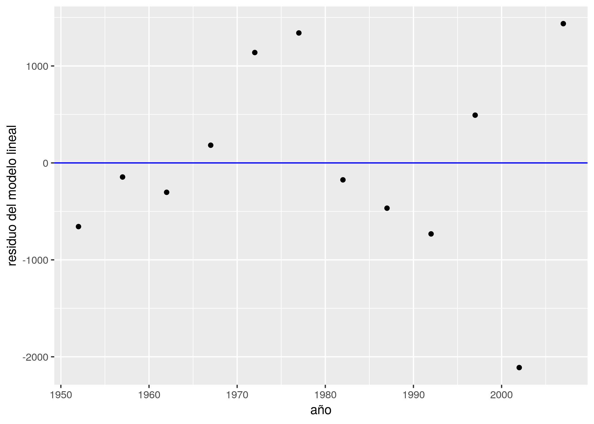
Siempre podemos esperar una cierta divergencia entre las predicciones y los valores observados, por lo que los residuos siempre tendrán (en general) un valor distinto a cero. Lo que quisiéramos ver en un gráfico como este es que los residuos se distribuyan al azar, sin indicios de patrones sistemáticos. Si así fuere, podemos considerar que nuestro modelo es adecuado.
¿Cómo determinamos que no exhiben patrones sistemáticos? Una vez mas, se trata de una evaluación bastante subjetiva, y cada quien estará conforme dependiendo del contexto y la experiencia previa. Aún así podemos argumentar en favor de la adecuación del modelo cuando:
- El promedio de los residuos se aproxima a cero; es decir, que los residuos positivos se cancelan con los negativos, promediando cerca de cero.
- El valor de los residuos no depende del valor de \(x\); es decir, no se observa un crecimiento (o decrecimiento) sistemático de la magnitud de los residuos a medida que\(x\) crece
Por lo visto, nuestro modelo cumple con 1. pero no con 2, ya que la magnitud de los residuos parece crecer con el paso de los años. Entre todos los puntos, los mayores transgresores son los últimos y corresponden a los años 2002 y 2007. El valor del PBI per cápita observado en 2002 año resultó ser más de 2000 dólares menor al esperado por el modelo, todo un derrumbe. ¿A qué se debe tanta discrepancia? Nuestro modelo no tiene la culpa, es que la realidad tiene sus bemoles. A fines del 2001 la Argentina sufrió la peor crisis financiera de su historia, factor que explica la brusca caída del PBI que revirtió la tendencia al crecimiento de décadas anteriores. Una función que aún no habíamos usado, geom_line(), nos va a permitir trazar una línea que siga el PBI a lo largo de los años, y otra novedad, geom_vline(), se encargará de agregar una línea vertical que señale el año de la crisis:
ggplot(data_arg) +
geom_line(aes(x = año, y = PBI_PC)) +
geom_vline(aes(xintercept = 2001), color = "red") +
labs(title = "Evolución del PBI en la Argentina",
y = "PBI per cápita",
caption = "La línea roja indica la ocurrencia de la crisis del 2001")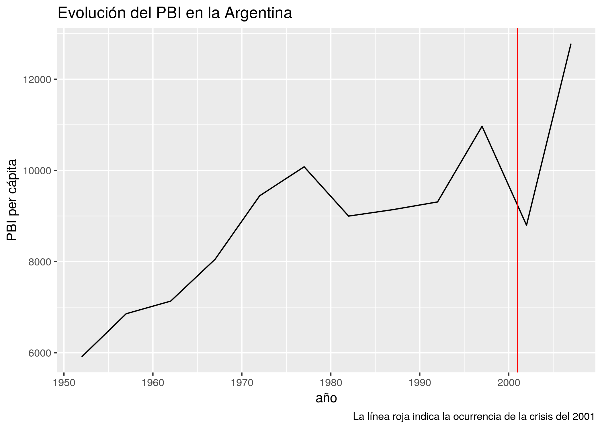
Es claro que el modelo se beneficiaría de poder tener en cuenta la irrupción de las crisis en el país. Esto se lograría agregando una variable categórica para cada año, que indique si se trata de un período de crisis. En ese caso, seria un modelo de regresión lineal múltiple (con más de una variable explicativa), incorporando una variable explicativa numérica y otra categórica. Que lástima que nuestro dataset no incluye la variable de las crisis financieras. Si quisiéramos mejorar nuestro modelo con esa información, no nos quedaría mas remedio que salir a buscar los datos. Con suerte, alguien los habrá recopilado por nosotros, y si no, tendríamos que hacerlo por nuestra cuenta. ¡La investigación es un sacerdocio!
En aras de la simplicidad, sigamos practicando con los datos disponibles.
5.1.3 Regresión con una variable categórica
El dataset con datos del mundo provisto por Gapminder incluye dos variables categóricas: país y continente. Con 142 países representados, podemos descartar a la primera como variable para realizar un modelo -recordemos que para entender la interrelación de variables, cuantas menos involucremos mejor. Los cinco continentes habitados representan un conjunto mucho más práctico, por lo que la pregunta será “¿Cuánto incide el continente en la expectativa de vida de los países?”
Comencemos por explorar los datos tomando las observaciones más recientes, las de 2007.
data_mundial_2007 <- data_mundial %>% filter(año == 2007)
ggplot(data = data_mundial_2007) +
geom_point(aes(x = continente, y = expVida, color = continente)) +
labs(title = "Expectativa de vida por continente",
y = "expectativa de vida")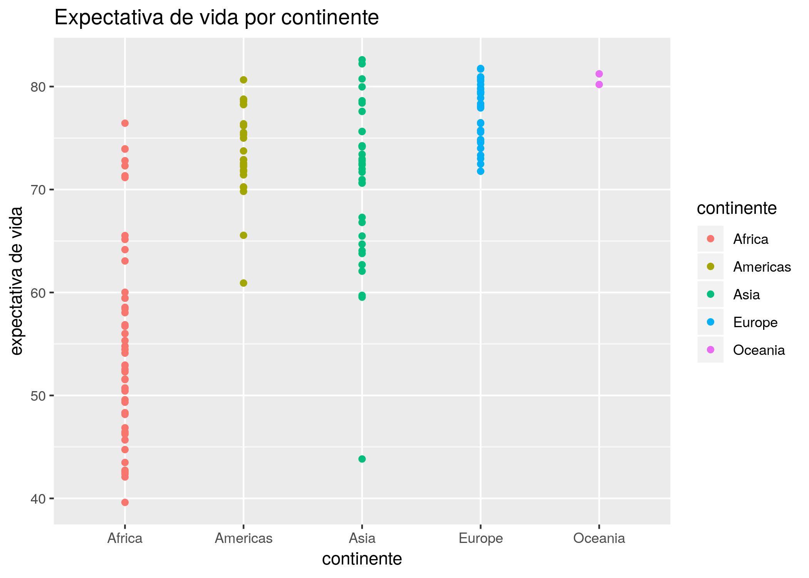
Ya podemos vislumbrar que el continente incide en la expectativa de vida, con África sufriendo los números más bajos. La profusión de puntos hace que muchos terminen superpuestos, haciendo imposible determinar cuántos ocupan cada posición (un problema llamado overplotting en inglés). Una variante de geom_point() llamada geom_jitter() resuelve este problema al “sacudir” los puntos, sumando a cada uno un pequeño valor al azar para que se separe de los que comparten su posición. Es un buen ejemplo de la paradoja por la cual reducir la precisión de la información a veces permite entender mejor lo que está ocurriendo. Usamos geom_jitter() igual que geom_point():
ggplot(data = data_mundial_2007) +
geom_jitter(aes(x = continente, y = expVida, color = continente)) +
labs(title = "Expectativa de vida por continente",
y = "expectativa de vida")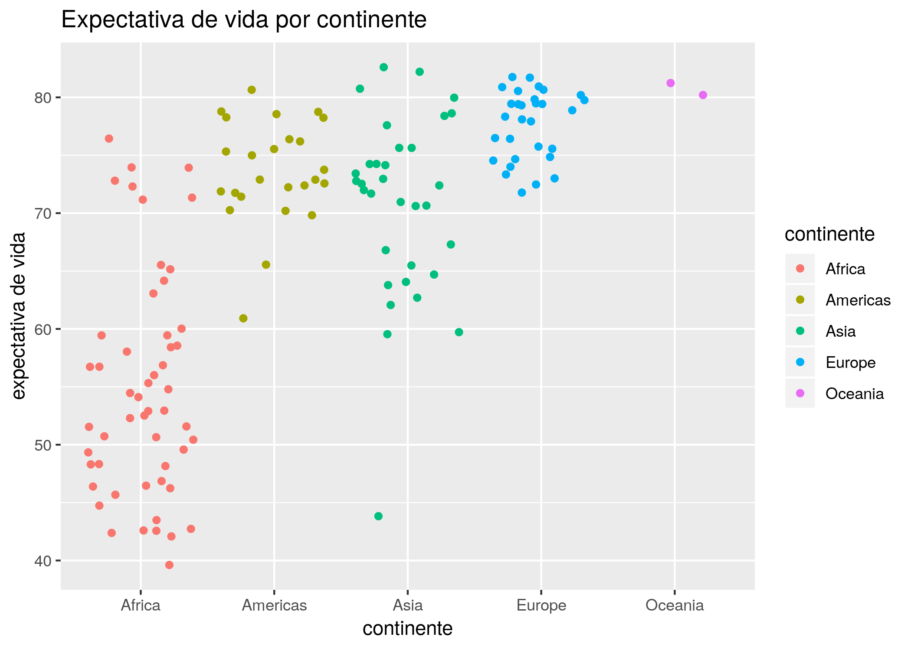
Algún ojo avizor habrá notado que la clasificación por color no es necesaria, ya que el continente ya está señalado por su posición en el eje de las x. El color cumple aquí una función más que nada cosmética, en pos de hacer al gráfico maś atractivo a la vista.
También podemos visualizar la diferencia de distribución de expectactiva de vida de los países, con un histograma facetado por continente:
ggplot(data = data_mundial_2007) +
geom_histogram(aes(x = expVida, fill = continente)) +
facet_wrap(~continente) +
labs(title = "Expectativa de vida por continente",
subtitle = "histogramas",
x = "expectativa de vida",
y = "cantidad")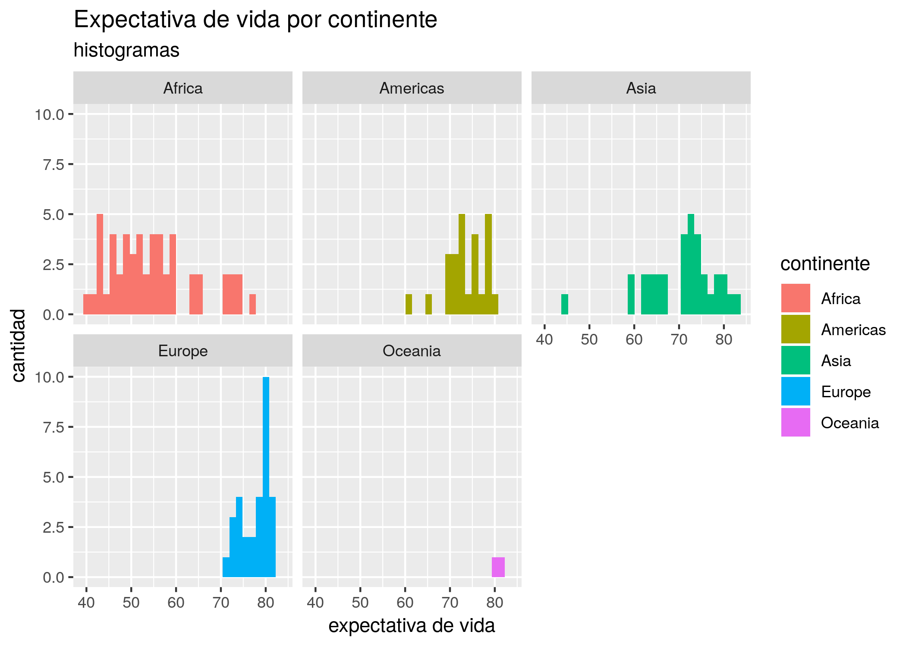
Bien, estamos convencidos de que hay una relación entre continente y expectativa de vida, aunque no la hemos cuantificado. Para eso, recurrimos a una regresión lineal con variable expicativa categórica. Se obtiene de la misma manera que antes, no hay cambios en la forma de invocar lm() por el hecho de que la variabe ahora sea categórica en vez de numérica.
modelo_exp_continente <- lm(expVida ~ continente, data = data_mundial_2007)
modelo_exp_continente##
## Call:
## lm(formula = expVida ~ continente, data = data_mundial_2007)
##
## Coefficients:
## (Intercept) continenteAmericas continenteAsia
## 54.81 18.80 15.92
## continenteEurope continenteOceania
## 22.84 25.91¿Qué ocurrió aquí? lm() inspeccionó el contenido de la variable “continente” y encontró cinco niveles o categorías. Tomó el primero en orden alfabético, “Africa” como línea de base. El primer coeficiente de la regresión (la intersección) es el promedio de la expectativa de vida en África. Para cada una de las categorías restantes, el coeficiente representa la diferencia respecto a África de la expectativa de vida promedio en cada uno de los otros continentes. He allí la cuantificación: para un país en las Américas, podemos esperar -en promedio- una expectativa de vida que supera en 18.8 años la de los paises africanos. Para un país en Asia, son 15.92 los años adicionales, y así.
Prestemos atención a los residuos. Agregamos al dataframe una columna con el residuo para cada observación,
data_mundial_2007 <- data_mundial_2007 %>%
mutate(residuo_ml = residuals(modelo_exp_continente))y graficamos la dispersión de los residuos en torno a cero, el valor ideal:
ggplot(data_mundial_2007) +
geom_jitter(aes(x = continente, y = residuo_ml), width = 0.1) +
geom_hline(yintercept = 0, col = "blue") +
labs(x = "año", y = "residuo del modelo lineal")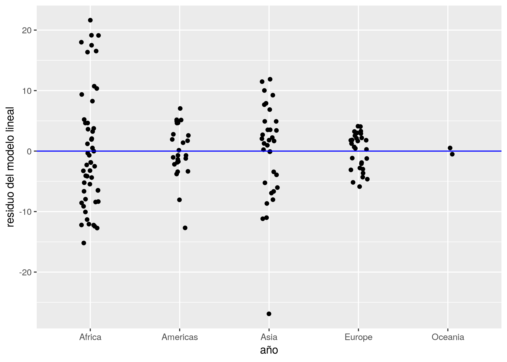
Notamos que:
- Los residuos están repartidos en forma pareja entre positivos y negativos. Eso indica que su promedio será cercano a cero, lo cual es bueno.
- En Asia hay un país cuyo valor observado está muy por debajo del esperado por el modelo. Se separa tanto de los demás que debemos considerarlo un outlier, un valor tan inusual que amerita ser revisado.
Con la magia de los verbos de transformación que sabemos, aislemos a los países en Asia con menor expectativa de vida para identificar al outlier.
data_mundial_2007 %>%
filter(continente == "Asia") %>%
arrange(expVida) %>%
head()## pais continente año expVida pobl PBI_PC residuo_ml
## 1 Afghanistan Asia 2007 43.828 31889923 974.5803 -26.900485
## 2 Iraq Asia 2007 59.545 27499638 4471.0619 -11.183485
## 3 Cambodia Asia 2007 59.723 14131858 1713.7787 -11.005485
## 4 Myanmar Asia 2007 62.069 47761980 944.0000 -8.659485
## 5 Yemen, Rep. Asia 2007 62.698 22211743 2280.7699 -8.030485
## 6 Nepal Asia 2007 63.785 28901790 1091.3598 -6.943485Se trata de Afganistán. Como explicación, uno piensa de inmediato en las largas guerras libradas en ese territorio, y en particular la invasión por parte de los Estados Unidos en 2001 -¡otra vez ese año!-. Podemos verificarlo con un gráfico que muestre la evolución de la expectativa de vida según los años.
data_afganistan <- data_mundial %>% filter(pais == "Afghanistan")
ggplot(data_afganistan) +
geom_line(aes(x = año, y = expVida)) +
labs(title = "Expectativa de vida en Afganistán",
y = "expectativa de vida")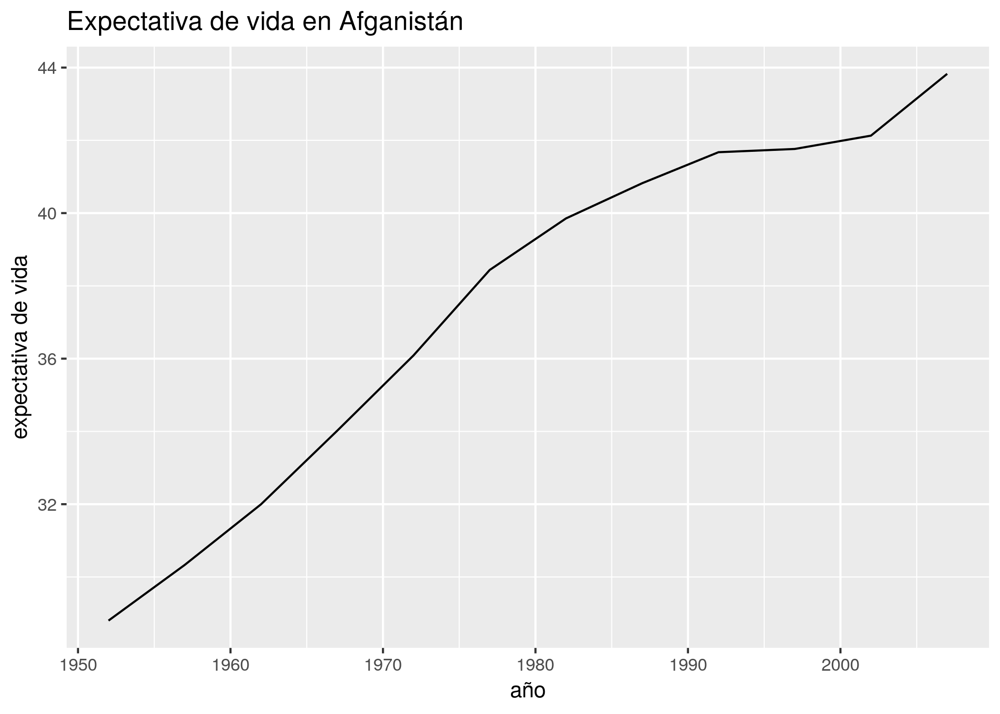
Vaya sopresa. A pesar de ser en extremo baja comparada con el resto de Asia, la expectativa de vida en Afganistán en el 2007 es la más alta de la historia, y no sólo eso: ha aumentado con rapidez después del año de la invasión. ¿A qué podemos atribuir entonces la bajísima expectativa de vida? Teniendo en cuenta que el país ha sufrido conflictos bélicos en forma continua desde fines de los ’70, podría tratarse de una tragedia histórica: los años que faltan son los que el país habría alcanzado si las guerras no hubieran alterado su ritmo de progreso.
Dependiendo del esfuerzo que requiera determinar la causa de un outlier, una alternativa razonable es dejarlo de lado. Es un poco cruel, pero realista: cuando tenemos cientos, miles o millones de observaciones, hacer una “poda” de los valores extremos que nuestros modelos no pueden explicar termina siendo la opción más razonable. Dedicar recursos limitados a la caza de una explicación o a complejizar el modelo agregando variables hasta lograr predecir los outliers no tiene sentido cuando se trata de casos aislados y fortuitos. Por otra parte, eliminarlos antes de tiempo podría hacernos ignorar los casos más interesantes de un dataset, los que más información podrían revelar. Existen tratados completos dedicados a la cuestión de como manejar los outliers, pero el conocimiento de dominio es la principal herramienta para decidir que hacer ante casos inusuales… como siempre.
5.2 Regresión con múltiples variables
Hasta aquí hemos usado la regresión lineal para hacer explícita la relación entre una variable resultante \(y\) y una única variable predictiva o explicativa \(x\). En algunos de nuestros resultados pudimos intuir que el agregado de alguna variable explicativa adicional podría mejorar nuestras predicciones. De eso se trata la regresión lineal múltiple: incorporar una cantidad arbitraria de variables al modelo, buscando representar las múltiples dinámicas que inciden en el fenómeno estudiado.
Una buena noticia es que, en general, agregar variables a nuestro modelo estadístico no requiere mucho esfuerzo adicional. En la época en que los cálculos matemáticos debían hacerse sin la ayuda de una computadora, sumar variables sin ton ni son debía tener poca gracia, debido a la creciente cantidad de cálculos a resolver. Para nosotros que dejamos la tarea en manos de software especializado, el problema es el opuesto. Es tan fácil sumar variables al modelo, que debemos evitar la tentación de arrojar todo dentro de la fórmula de regresión líneal y decidir luego que parece importante y que no.
Pasemos a la práctica. Vamos a modelar la expectativa como resultante de la población y del PBI per cápita de los países, usando los datos más reciente (tomados en 2007). La única difrerencia respecto a una regresión lineal simple es que usamos + para agregar variables en la fórmula de lm()
modelo_exp_multiple <- lm(expVida ~ pobl + PBI_PC, data = data_mundial_2007)
modelo_exp_multiple##
## Call:
## lm(formula = expVida ~ pobl + PBI_PC, data = data_mundial_2007)
##
## Coefficients:
## (Intercept) pobl PBI_PC
## 59.205198140717 0.000000007001 0.000641608517¿Cómo interpretamos esos resultados? Más o menos de la misma manera que con la regresión simple. Como antes, tenemos un coeficiente para la intersección, al que no prestamos mucha atención porque no nos dice nada de la relación entre las variables. Lo que cambia es que esta vez tenemos dos variables predictoras en lugar a una, cada una con su coeficiente. Los coeficientes positivos indican que la relación de la población con la expectativa de vida es de correlación positiva (cuando una crece la otra tiende a crecer también), y lo mismo ocurre con el PBI. La magnitud de los coeficientes es pequeña (minúscula en el caso de la población), lo cual dificulta “narrar” los resultados, pero podemos hacerlo así:
- Cuando las demás variables se mantienen constantes (es decir, en países con PBI similar) el incremento de una unidad de población -un habitante- está asociado a un incremento de 0,000000007 años en la expectativa de vida del país… unas dos décimas de segundo.
- Cuando las demás variables se mantienen constantes (es decir, en países con población similar) el incremento de una unidad de PBI -un dólar per cápita- está asociado a un incremento de 0,00064 años en la expectativa de vida del país… un poco más de cinco horas y media.
Pensemos un poco si los resultados tienen sentido. La correlación positiva entre PBI y longevidad es de lo más razonable. No nos extraña que los países de mayores ingresos tiendan a ser aquellos cuyos habitantes viven más tiempo. La correlación con la población es quizás inesperada. Si la longevidad se incrementa junto a la cantidad de habitantes, ¿acaso no deberíamos encontrar a varios de los países más populosos entre los más longevos?
Veamos el top ten de países más poblados:
data_mundial_2007 %>%
arrange(desc(expVida)) %>%
head(n = 10)## pais continente año expVida pobl PBI_PC residuo_ml
## 1 Japan Asia 2007 82.603 127467972 31656.07 11.87452
## 2 Hong Kong, China Asia 2007 82.208 6980412 39724.98 11.47952
## 3 Iceland Europe 2007 81.757 301931 36180.79 4.10840
## 4 Switzerland Europe 2007 81.701 7554661 37506.42 4.05240
## 5 Australia Oceania 2007 81.235 20434176 34435.37 0.51550
## 6 Spain Europe 2007 80.941 40448191 28821.06 3.29240
## 7 Sweden Europe 2007 80.884 9031088 33859.75 3.23540
## 8 Israel Asia 2007 80.745 6426679 25523.28 10.01652
## 9 France Europe 2007 80.657 61083916 30470.02 3.00840
## 10 Canada Americas 2007 80.653 33390141 36319.24 7.04488y el de países con mayor expectativa de vida:
data_mundial_2007 %>%
arrange(desc(pobl)) %>%
head(n = 10)## pais continente año expVida pobl PBI_PC residuo_ml
## 1 China Asia 2007 72.961 1318683096 4959.115 2.23251515
## 2 India Asia 2007 64.698 1110396331 2452.210 -6.03048485
## 3 United States Americas 2007 78.242 301139947 42951.653 4.63388000
## 4 Indonesia Asia 2007 70.650 223547000 3540.652 -0.07848485
## 5 Brazil Americas 2007 72.390 190010647 9065.801 -1.21812000
## 6 Pakistan Asia 2007 65.483 169270617 2605.948 -5.24548485
## 7 Bangladesh Asia 2007 64.062 150448339 1391.254 -6.66648485
## 8 Nigeria Africa 2007 46.859 135031164 2013.977 -7.94703846
## 9 Japan Asia 2007 82.603 127467972 31656.068 11.87451515
## 10 Mexico Americas 2007 76.195 108700891 11977.575 2.58688000El único país presente en ambas listas es Japón. Ni nuestro conocimiento del mundo, ni los datos parecen apoyar la noción de que población y longevidad van juntos. Ya hemos usado cor() para obtener una medida de la intensidad de la correlación entre dos variables. Veamos que pasa con longevidad vs. población:
cor(data_mundial_2007$expVida, data_mundial_2007$pobl)## [1] 0.04755312Recordemos que la intensidad de una correlación es su valor absoluto, que toma un máximo de 1, mientras que el signo (positivo o negativo) indica si la relación entre variables es directa o inversa. Aquí obtuvimos un valor bien bajo, cercano a cero: la correlación es nula. Entonces ¿Por qué aparece en nuestro modelo de regresión lineal?
En resumidas cuentas, aparece porque nosotros le pedimos que aparezca. Es decir, instruimos en forma específica a lm() para que incorpore a la población en el modelo. El caso es que población no es un buen predictor de longevidad (la correlación es bajísima), pero si lo pedimos, lo tenemos: el coeficiente nos indica el valor que minimiza las discrepancias entre valores observado y valores predichos trazando una línea recta. Lo que no indica por si solo es el grado en el cual podemos confiar en esa variable para darnos buenas predicciones o estimados.
Sería muy util que el resultado de lm() indique cuáles variables son buenas predictoras y cuáles no. Y por suerte, lo hace cuando lo interrogamos con summary(), la misma función que hemos estado usando para obtener el resumen de un dataframe. Cuando la usamos con un objeto de R que contiene un modelo estadístico, lo que obtenemos son sus detalles:
summary(modelo_exp_multiple)##
## Call:
## lm(formula = expVida ~ pobl + PBI_PC, data = data_mundial_2007)
##
## Residuals:
## Min 1Q Median 3Q Max
## -22.496 -6.119 1.899 7.018 13.383
##
## Coefficients:
## Estimate Std. Error t value Pr(>|t|)
## (Intercept) 59.205198140717 1.040398672164 56.906 <0.0000000000000002
## pobl 0.000000007001 0.000000005068 1.381 0.169
## PBI_PC 0.000641608517 0.000058176209 11.029 <0.0000000000000002
##
## (Intercept) ***
## pobl
## PBI_PC ***
## ---
## Signif. codes: 0 '***' 0.001 '**' 0.01 '*' 0.05 '.' 0.1 ' ' 1
##
## Residual standard error: 8.87 on 139 degrees of freedom
## Multiple R-squared: 0.4679, Adjusted R-squared: 0.4602
## F-statistic: 61.11 on 2 and 139 DF, p-value: < 0.00000000000000022El resumen incluye los parámetros que definieron al modelo, los valores por cuartil de los residuos, y una tabla con variables numéricas. En esa tabla, bajo la columna Estimate tenemos el “efecto” estimado de cada variable explicativa sobre la dependiente. Es decir, los coeficientes que ya conocemos. Luego aparecen tres columnas con atributos estadísticos: Std. Error, t value, y Pr(>|t|). En castellano las llamaríamos, respectivamente, error estándar, valor t y valor p. Interpretar estos valores cae fuera de nuestros objetivos, pero podemos señalar que el más famoso entre ellos es el valor p, porque se usa como medida: si vale menos de 0,5, se considera que la capacidad de predicción de la variable asociada es significativa. Para interpretar todo esto de manera sencilla, una vez más vamos a confiar en R para guiarnos. He aquí la curiosa forma de determinar si una variable es buena predictora o no: contar estrellitas. Junto a cada fila aparecen, a veces, de uno a tres asteriscos. Son la forma de R de decirnos cuales son las variables explicativas que muestran una relación “estadísticamente significativa” con nuestra variable dependiente. Cuanto más bajo el valor p, más significativa es la relación y más estrellitas aparecen:
.o nada: No se encuentra una relación entre esta variable y la que queremos predecir.*: Es muy probable que esta variable tenga una relación con la que queremos predecir. Ya podemos publicar estos resultados en un paper científico.**: Es muy, pero muy probable que esta variable tenga una relación con la que queremos predecir. 99% seguro.***: Juramos que las variables estan relacionadas. Más no se puede pedir.
Lo de un asterisco/estrella (*) indicando que los resultados ya alcanzan rigor científico no es broma. El asterisco solitario indica que, a nivel estadístico, se supera el 95% de confianza en que la relación existe en la realidad y no es producto de una casualidad en los datos. Pasando ese umbral se considera que los datos son “estadísticamente significativos”, y desde hace muchos años encontrar un valor p menor a 0,05 es la meta dorada de los investigadores que emplean análisis estadístico. ¿Porqué un 95% de confianza alcanza? ¿Porqué no relajar el límite a 90%, o quizás mejor, exigir al menos un 99 o 99,9% de seguridad? La verdad es que no hay ninguna razón trascendental. El 95% de certeza es tan sólo un umbral arbitrario que en algún momento se volvió estándar. Es importante aclarar que en los últimos años ha crecido una reacción de rechazo a esta norma arbitraria, dentro de la propia comunidad científica. Quienes siguen confiando en los valores p son llamados “frecuentistas”; los que proponen cuantificar de otra forma nuestro grado de certeza son llamados “bayesianos”. Google mediante, quien quiera saber más sobre la apasionante rivalidad tendrá horas de diversión aseguradas.
En lo que a nosotros respecta, por ahora vamos a aceptar el enfoque frecuentista, y cuando veamos una estrella diremos que la variable asociada es un buen predictor. O para ser más precisos, que su relación con la variable dependiente es estadísticamente significativa.
Volvamos a nuestros modelos. Cuando hicimos regresiones simples no sabíamos aún de valores p, y no revisamos la significancia de las variables predictoras. Hagamoslo ahora con el modelo de expectativa de vida en Argentina vs. PBI :
summary(modelo_exp)##
## Call:
## lm(formula = expVida ~ año, data = data_arg)
##
## Residuals:
## Min 1Q Median 3Q Max
## -0.53006 -0.13516 -0.01219 0.14228 0.55202
##
## Coefficients:
## Estimate Std. Error t value Pr(>|t|)
## (Intercept) -389.606345 9.677730 -40.26 0.000000000002140 ***
## año 0.231708 0.004889 47.40 0.000000000000422 ***
## ---
## Signif. codes: 0 '***' 0.001 '**' 0.01 '*' 0.05 '.' 0.1 ' ' 1
##
## Residual standard error: 0.2923 on 10 degrees of freedom
## Multiple R-squared: 0.9956, Adjusted R-squared: 0.9951
## F-statistic: 2246 on 1 and 10 DF, p-value: 0.0000000000004216Las tres estrellitas, distintión máxima, indican que sin dudas el año está relacionado con la expectativa de vida. Esto no es una sopresa: la linea de la regresión lineal se ajusta con tanta precisión a los valores observados, que no podía ser de otra manera.
Continuando con las regresiones múltiples, intentemos un modelo con tres variables predictoras. A población y PBI, las que ya teníamos en cuenta, vamos a agregar una variable categórica: el continente.
modelo_exp_multiple <- lm(expVida ~ pobl + PBI_PC + continente, data = data_mundial_2007)
summary(modelo_exp_multiple)##
## Call:
## lm(formula = expVida ~ pobl + PBI_PC + continente, data = data_mundial_2007)
##
## Residuals:
## Min 1Q Median 3Q Max
## -22.8199 -2.8905 0.1574 2.9046 20.0585
##
## Coefficients:
## Estimate Std. Error t value
## (Intercept) 53.7141900516204 0.9355709763972 57.413
## pobl 0.0000000009586 0.0000000039259 0.244
## PBI_PC 0.0003479123814 0.0000571704015 6.086
## continenteAmericas 16.0313726693021 1.6713252557392 9.592
## continenteAsia 12.5640427449841 1.6209815371922 7.751
## continenteEurope 15.1989177617593 1.9662500363509 7.730
## continenteOceania 16.6222095573924 4.9925674316223 3.329
## Pr(>|t|)
## (Intercept) < 0.0000000000000002 ***
## pobl 0.80747
## PBI_PC 0.00000001127738 ***
## continenteAmericas < 0.0000000000000002 ***
## continenteAsia 0.00000000000197 ***
## continenteEurope 0.00000000000220 ***
## continenteOceania 0.00112 **
## ---
## Signif. codes: 0 '***' 0.001 '**' 0.01 '*' 0.05 '.' 0.1 ' ' 1
##
## Residual standard error: 6.597 on 135 degrees of freedom
## Multiple R-squared: 0.7141, Adjusted R-squared: 0.7014
## F-statistic: 56.2 on 6 and 135 DF, p-value: < 0.00000000000000022Observamos que la variable categórica es significativa. Con las demas variables fijas -es decir, en paises de similar PBI y población- el continente de origen explica en gran medida las diferencias en expectativa de vida en cada país, y con un efecto estimado enorme - ¡de 12 a 16 años!-. Notemos de todos modos que el coeficiente de la variable continente había sido mayor en el modelo simple, llegando a casi 26 años para Oceanía. ¿Porqué es menor ahora? Porque nuestro modelo es más completo, y tiene en cuenta más variables. Cuando lo único que teníamos para comparar países era su continente, era era la única variable a la que atribuir diferencias. Ahora que consideramos mútiples variables para explicar las diferencias, notamos la parte de la influencia que se lleva el PBI, reduciendo la del contintente.